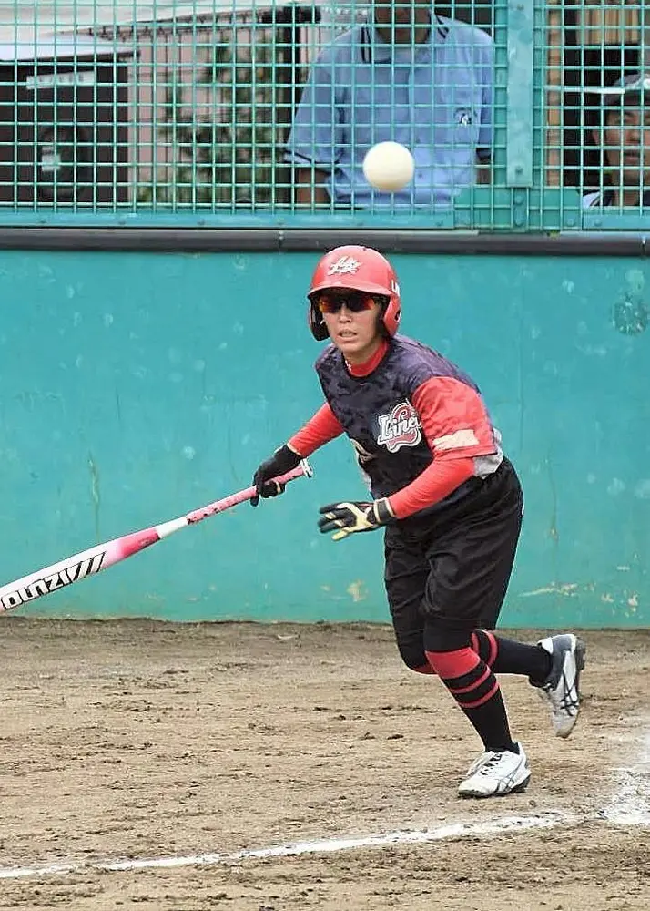
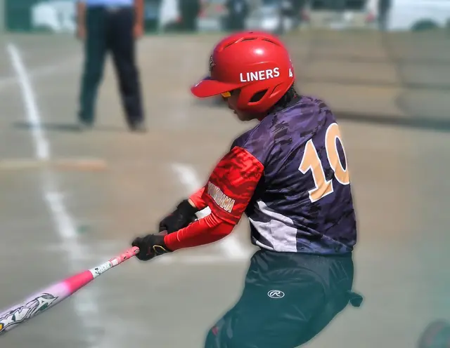
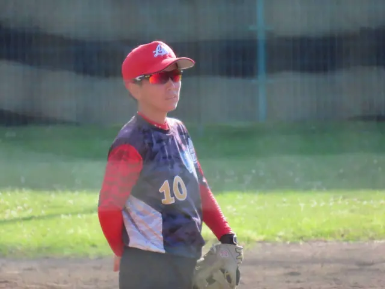

MEMBER INTERVIEW
のんさん
メンバーインタビュー




INTERVIEW
のんさん
2008年参加 40代 女性
出身
北海道
生まれも育ちも札幌。
発音でたまに道産子でちゃう。
好きな食べ物
お寿司が大好き😋
刺身も好き
酢飯もすき❤️
参加したきっかけとコメント
転勤してきて、子どもを産んで、「また強いチームでソフトボールがしたい」と思うようになった時に、たまたま近場でライナーズを見つけました！
当時は今みたいにSNSが普及していなかったので、活動状況もよく分からず、まずは全国大会を直接観に行きました。そこで勇気を出してメンバーに話しかけて、「チームに入りたいです！」とお願いしたのが始まりです。そこから現在に至ります。
知り合いが誰もいない中での子育ては不安もたくさんありましたが、チームメイトのみんなが本当にたくさん子どものお世話を手伝ってくれて、すごく支えてもらいました。
みんなには感謝しかないですし、私にとって本当に大切な存在です！
横浜市港北区のライナーズで、
ソフトボールを楽しみませんか？
ライナーズ（LINERS）は、神奈川県横浜市港北区を中心に活動するレディース／エルダーソフトボールチームです。
経験やブランクを問わず、見学・体験を歓迎しています。参加をご希望の方は、InstagramのDMからお気軽にお問い合わせください。
\ チームメンバー募集中！ /
お問い合わせはこちら！